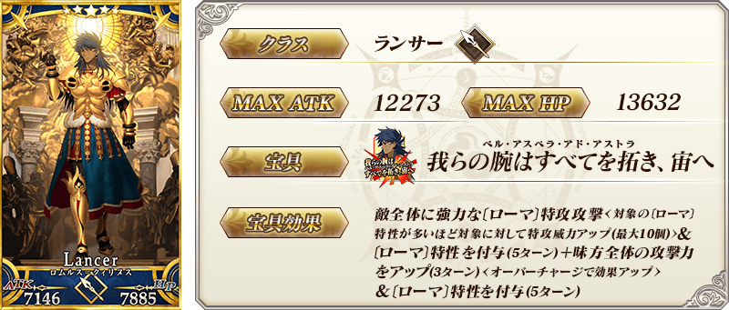
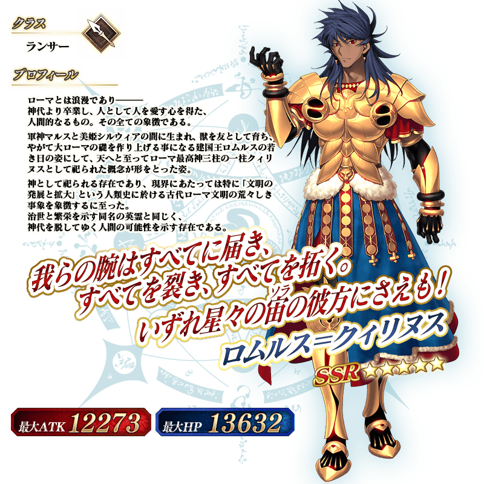
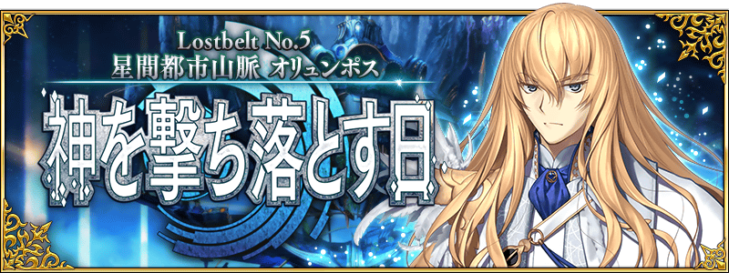

◆「奧林帕斯Pick Up2召喚」期間◆
期間:2020年4月16日(四) 17:00～4月30日(四) 11:59
期間限定「奧林帕斯Pick Up2召喚」舉辦！ ※就算未滿足主線關卡開放條件的狀態也能進行本召喚。
自第2部 第5章「Lostbelt No.5 星間都市山脈 奧林帕斯 擊落神之日」下述的從者以期間限定新登場！
・★5(SSR)羅慕路斯＝奎里努斯
另外，在「奧林帕斯Pick Up召喚」先行新登場的下述概念禮裝也登場！
・★5(SSR)ウィッチクラフト
・★4(SR)リズムド・バース
・★3(R)黄金樹の系譜
並且，★3(R)概念禮裝的陣容一部份翻新！
Pick Up期間中，Pick Up對象從者的出現機率提升！
詳情請在聖晶石召喚畫面左下的召喚詳細確認。
11次召喚中確定1張★4(SR)以上和確定1位★3(R)以上的從者！ ※確定★4(SR)以上包含從者和概念禮裝。 ※本頁面皆為開發中圖片。會有與實際圖片相異的情況。
◆有關從者的注意◆
※下述的從者在Pick Up期間結束後不會追加到故事召喚。
・★5(SSR)羅慕路斯＝奎里努斯
◆有關概念禮裝的注意◆
※下述的概念禮裝的出現機率沒有提升。
・★5(SSR)ウィッチクラフト
・★4(SR)リズムド・バース
・★3(R)黄金樹の系譜
※下述的概念禮裝自Pick Up期間結束後的2020年4月23日(四) 12:00，追加到故事召喚。
・★5(SSR)ウィッチクラフト
・★4(SR)リズムド・バース
・★3(R)黄金樹の系譜
※隨著翻新，下述的概念禮裝於本召喚為召喚對象外。
・★3(R)深窓の麗人
※2020年4月23日(四) 12:00以後，下述的概念禮裝變得不會從故事召喚被抽出，追加至友情點數召喚。
・★3(R)深窓の麗人
 ※上述「★5(SSR)羅慕路斯＝奎里努斯」的卡面為靈基再臨第2階段。
 ※上述「★5(SSR)羅慕路斯＝奎里努斯」的立繪為靈基再臨第2階段。
介紹「★5(SSR)羅慕路斯＝奎里努斯」的寶具演出！
在「Fate/Grand Order」官方網站內的公告中，以影片公開寶具演出，敬請確認。
關於主線關卡第2部 第5章「Lostbelt No.5 星間都市山脈 奧林帕斯 擊落神之日」和期間限定「奧林帕斯Pick Up召喚」的詳情，請自下述橫幅確認。
■「Lostbelt No.5 星間都市山脈 奧林帕斯 擊落神之日」詳細情報 